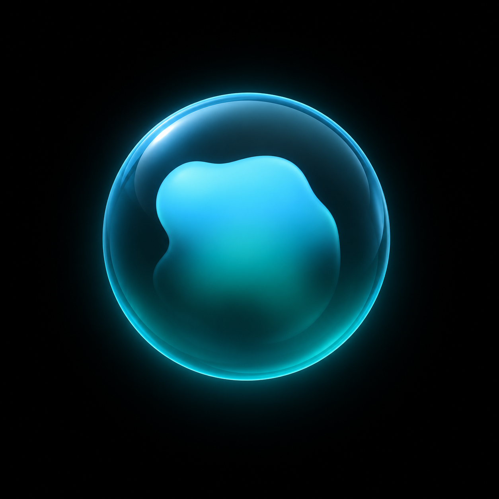
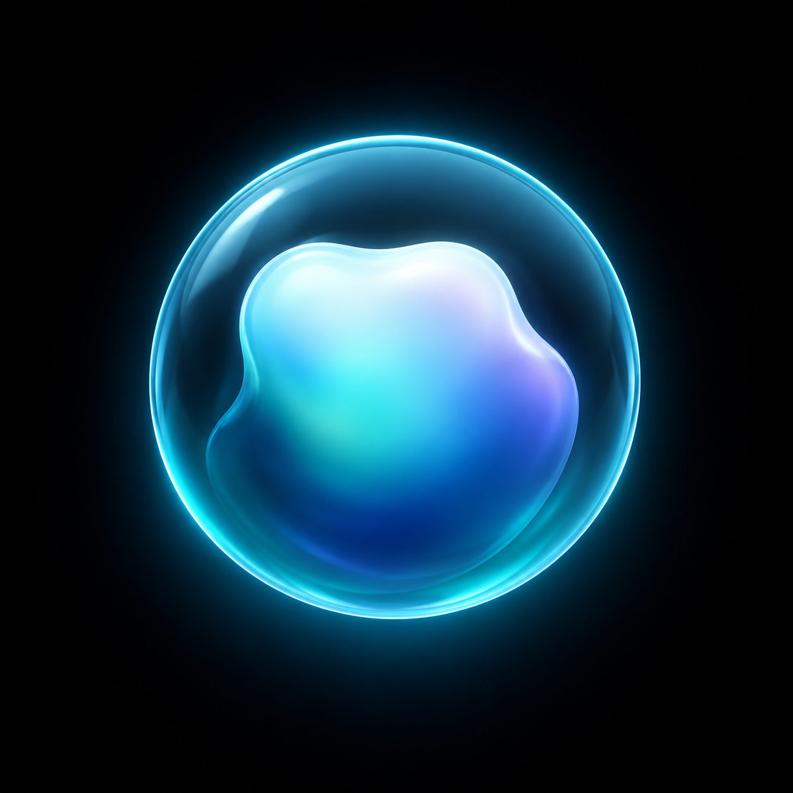
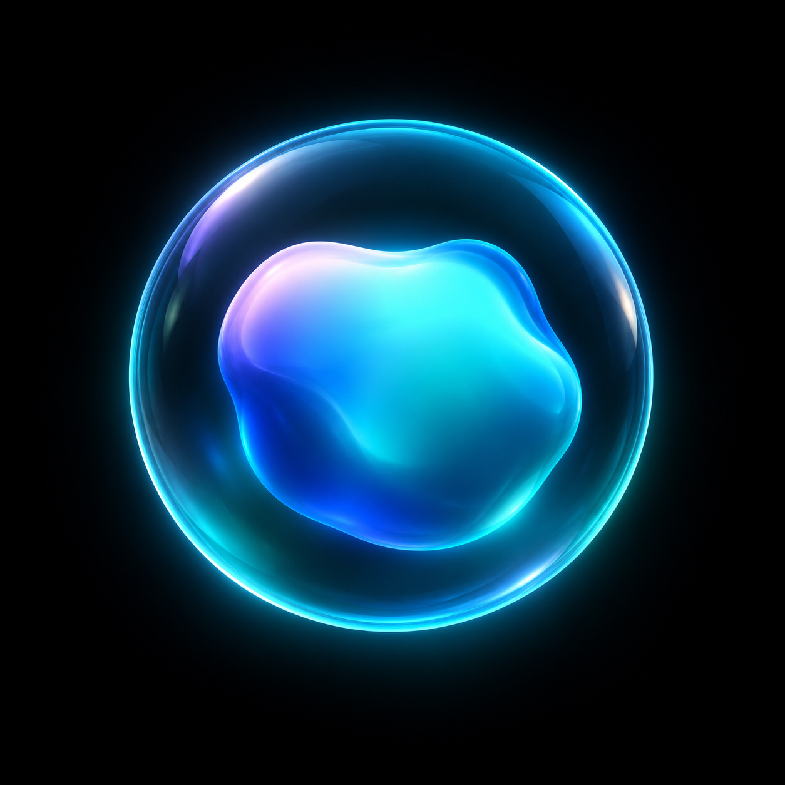

One little presence.
Three ways to feel it.
Fresh material studies inspired by the app's glass rim and living liquid core.


02 · Pearl
A lighter, opalescent material.

Fresh material studies inspired by the app's glass rim and living liquid core.


